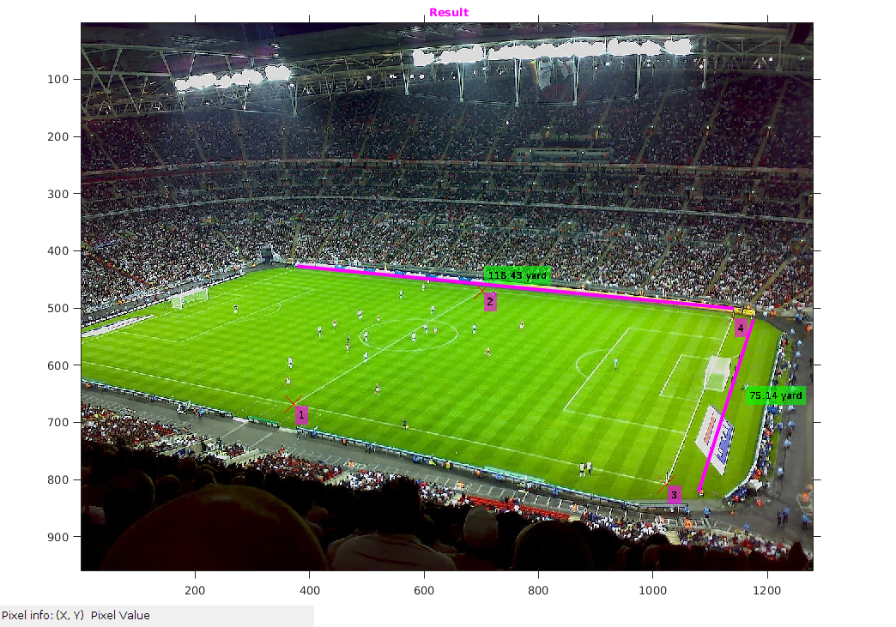

Homography
Assignment2-1 Rollno: 163059009, 16305R011, 16305R001
Contents
Init
file='../input/wembley.jpeg'; img=imread(file); dim=size(img); format shortG
0) Data Points
We have take 4 datapoints for our dimension Calculation.
tic; %datatset : 4 points pointsI1=[ 676,846,1 ; %1 535,958,1 ; %2 720,1058,1 ; %3 556,1124,1 ; %4 ]; pointsI2=[0,0,1 ; %1 44,0,1 ; %3 0,18,1 ; %2 44,18,1; %4 ]; img1=img; noOfPoints=size(pointsI1,1); for i=1:noOfPoints img1 = insertMarker(img1,[pointsI1(i,2),pointsI1(i,1)],'x','color','red','size',15); img1= insertText(img1,[pointsI1(i,2)+3,pointsI1(i,1)+3], num2str(i), 'FontSize',18,'BoxColor', 'red'); end figure('name','original image'); imshow(img1); impixelinfo; title('\fontsize{10}{\color{magenta}original image}'); axis tight,axis on;
Warning: Image is too big to fit on screen; displaying at 67%
1) Homography
[H]=homography(pointsI1,pointsI2);
fprintf('**Projection Matrix H:\n');
disp(H);
**Projection Matrix H:
0.57641 -0.11963 -288.44
-0.1822 -0.22937 317.21
-0.0051584 -0.00040908 1
2) Estimation of dimension
On calculation of dimension, we get 118.43yd * 75.14yd Actual dimension is 115yd * 75yd (src: Google)
halfGroundI1= [ 668,372,1 ; %1 470,702,1 ; %2 808,1024,1; %3 516,1140,1; %4 ]; halfGroundI2=(H*halfGroundI1')'; halfGroundI2(:,1)=halfGroundI2(:,1)./halfGroundI2(:,3); halfGroundI2(:,2)=halfGroundI2(:,2)./halfGroundI2(:,3); halfGroundI2(:,3)=1; groundWidth=sqrt(sum((halfGroundI2(3,:)-halfGroundI2(4,:)).^2)); groundHeight=sqrt(sum((halfGroundI2(2,:)-halfGroundI2(4,:)).^2)) * 2 ; fprintf('** Ground Height: %f yard\n',groundHeight); fprintf('** Ground Width: %f yard\n',groundWidth);
** Ground Height: 118.435186 yard ** Ground Width: 75.140124 yard
2.1) Marking of points and length
img1=img; noOfPoints=size(halfGroundI1,1); for i=1:noOfPoints img1 = insertMarker(img1,[halfGroundI1(i,2),halfGroundI1(i,1)],'x','color','red','size',15); img1= insertText(img1,[halfGroundI1(i,2)+3,halfGroundI1(i,1)+3], num2str(i), 'FontSize',18,'BoxColor', 'magenta'); end img1=insertText(img1,[1163,637], '75.14 yard', 'FontSize',18,'BoxColor', 'green'); img1=insertText(img1,[706,427], '118.43 yard', 'FontSize',18,'BoxColor', 'green'); % Marking Showing image figure('name','Result'); imshow(img1); impixelinfo; title('\fontsize{10}{\color{magenta} Result}'); axis tight,axis on; % line([1142,378], [501,427], 'Color', 'magenta', 'LineWidth', 3); line([1176,1080], [520,821], 'Color', 'magenta', 'LineWidth', 3);
Warning: Image is too big to fit on screen; displaying at 67%